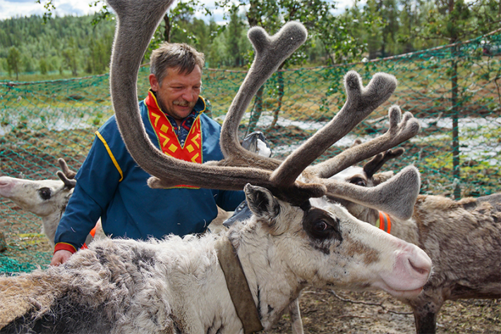

It’s November, and Arlyn Charlie feels uneasy. As he steps across the frozen surface of the Teetł'it Gwinjik, a river in Gwich’in territory in northwest Canada, the ice cracks beneath his feet.
Around him, poles jut out from holes in the ice; beneath the surface, they anchor nets to catch łuk dagaii, broad whitefish, as they migrate downriver. For generations, the Gwich’in people have traveled here during Khaiints’an, the autumn of their five-season calendar, when the skies grow darker and the first snow falls. They have a slim window of time after the ice freezes over but before the fish conclude their fall run. This brief pulse of fishing provides vital winter sustenance—especially now, with rising grocery prices—and remains a pillar of Gwich’in identity, Charlie says.
Nautilus premium members can listen to this story, ad-free.
Nautilus members can listen to this story.
But while Gwich’in people used to set their nets in mid-October, the freeze-up has become increasingly unpredictable and sometimes happens as late as November, Charlie wrote after his venture onto the thin ice. And Charlie has noticed snow and ice thawing under an unseasonably warm Khaiints’an. While older people seem to know how to read the ice and tell where it’s safe to step on, the 28-year-old Charlie treads cautiously. Watching his grandmother take fish from the nets, he wonders whether this timeless tradition might someday become impossible. “There’s a lot of unpredictability to everything within our calendar and how we interact with the land now,” Charlie says. “How do our cultural and traditional practices remain intact?”
Some seasons have disappeared altogether.
The Gwich’in, like many other Indigenous people, have accumulated a vast body of knowledge on the seasonal rhythms of wildlife, plants, and weather around them. And over millennia, these observations have coalesced into calendars that mark the passage of important annual changes. These ecological or “biocultural” calendars are key to survival, helping people predict the best times for fishing, harvesting, hunting, herding, or planting. Even today, when traditional knowledge systems and ways of life are threatened due to the effects of colonization, these calendars remain important for many Indigenous communities. As Charlie notes, though many Gwich’in people now live in towns and settlements and not nomadically as they once did, this kind of seasonal knowledge still forms a critical link to their lands and their culture.
But rapid changes to the climate are disrupting many of the seasonal patterns encoded in many Indigenous calendars. Warmer weather and disrupted cycles of storms and precipitation are transforming the very character of the seasons while also shifting them forward or backward in time. Some cycles that used to be in sync—such as the ice freeze-up and the whitefish migration—now no longer are. Climate change is shifting the schedules of plants and animals, making seasonal events harder to predict and key activities harder to plan. As Western scientists plot the extent and details of these changes, many Indigenous people are feeling them viscerally through their calendars as their practices, identity, traditions, and sense of seasonality are disrupted.
Seeking a way forward, some communities are exploring ways of adapting their calendars to new conditions so they can continue their traditional ways in a warming world. “As Gwich’in people, we have this idea that we are spiritually connected to the land,” Charlie says. “We still want to rely upon it. We still want to trust that we can harvest and travel out on the land [safely].”
Many urban societies with industrialized food systems have become divorced from the rhythms of nature; some scholars have described the Western concept of time like an arrow—a linear constant, steadily counting the months, years, and decades. But many cultures closely attuned to nature, including many Indigenous communities, have a more cyclical perception of time that is rooted in the rhythms of their lands, though they often also track astronomical observations such as the lunar and solar cycles. Ecological calendars are as diverse as local ecologies and cultures themselves—ranging from the seven-season calendar of the Larrakia people in northern Australia to the 72 microseasons of the ancient Japanese almanac. “It’s representing a unique knowledge system from one language group that exists in one place,” says Emma Woodward, a community-engaged geographer at Australia’s Commonwealth Scientific and Industrial Research Organization (CSIRO) who has been helping to conserve Indigenous calendars in northern Australia.
Over generations, many Indigenous people have learned to recognize the broader significance of signals around them—the flowering of a plant, the arrival of a migratory bird, a shift in the winds—not just to know what season it is, but also what they need to be doing to survive as seasons change. In the Larrakia calendar, for instance, the blooming of wattle flowers during the season of Dinidjanggama, or “heavy dew time,” signals that small sharks along the coast are fat and ready to be harvested. When Anishinaabe communities around the Great Lakes in North America hear frogs singing in the early spring, they know the maple sap harvest is over; if they leave their taps in longer, the sap will become too milky, according to Michael Waasegiizhig-Price, who is Anishinaabe and the traditional ecological knowledge specialist at the Great Lakes Indian Fish and Wildlife Commission. And on the islands of Vanuatu in the South Pacific, people look to the annual mass spawning event of a small marine invertebrate, the palolo worm, to predict the impending cyclone season, allowing them to prepare for it accordingly.

REINING IN UNCERTAINTY: Saami people depend on rhythmic signals in their environments to guide their herding of reindeer, which provide sustenance, clothing, and trade. Photo by Igor Stomakhin / Shutterstock.
Sometimes these cycles just happen to be synchronized with one another; other times there may be a causal relationship. Where Larrakia elders say that certain flowers call the cold weather, Western scientists might contend that it’s the cold that induces the flowering, says Lorraine Williams, a Larrakia woman who works on research projects about traditional ecological knowledge at Charles Darwin University in the Northern Territory and with CSIRO. She says that traditional knowledge provides a different way of looking at nature.
Knowledge of these ecological connections are typically passed down through Indigenous language and culture. In several Indigenous languages of the North American Pacific Northwest, the name for the Swainson’s thrush translates to “salmonberry bird,” relating to traditional wisdom that the bird’s song will cause the berries to ripen in the late spring and summer, says linguist David Stringer of Indiana University. And in Brazil, during annual festivals celebrating the dark-billed cuckoo, the Wajãpi people sing a song that guides the planting of sweet potatoes: When a breeze blows at the beginning of the dry season, and the stars of the Pleiades appear in the early morning, then the cuckoo starts to drink and sings his drunken song. He sings until the end of the growing season, when the sweet potatoes begin to sprout, and then the Pleiades will appear in the evening sky, according to a summary by Stringer.
The cultural transmission of calendar knowledge is threatened by the declining use of many Indigenous languages that have passed that knowledge down over the generations. Knowing and communicating when to plant crops or hunt wildlife allows communities to maintain sovereignty over their food production and access healthier and less expensive options than products in the supermarkets of industrialized food systems. “It’s a matter of community health, it’s a matter of social justice,” Stringer says. On Aneiytum, an island in Vanuatu, lobsters are traditionally only allowed to be collected during the three months when a deciduous tree called Terminalia catappa loses its leaves, preventing overharvesting. And while the palolo worm warns of dangerous cyclones, the browning of the leaves of the coastal she-oak, Casuarina equisetifolia, alerts people to the risk of heatstroke.
Though this kind of relational guidance may seem foreign to non-Indigenous people, many European cultures used similar signals to time agricultural activities until quite recently, Stringer says. For instance, according to a 1976 poem from Warwickshire, England, it’s time to sow barely when an elm leaf is as big as a mouse’s ear, and when it’s as big as a shilling, it’s time to plant kidney beans. It’s just that urban societies, so separated from their food production systems, have largely lost this practical knowledge.
And as climate change gathers pace, much of the traditional calendar knowledge is becoming less reliable.
Planetary warming is disrupting many of the seasonal patterns encoded in Indigenous calendars.
Indeed, in Yuku Baja Muliku country in eastern Australia, some locals have reported that the delayed flowering of wattle trees is already a less reliable signal for the beginning of the fishing season for certain species. Similarly, some Indigenous communities in northern Chile have noticed that the buff-necked ibis, a migratory wading bird whose arrival has long marked the beginning of spring and the time for fishing king crab, now appears several weeks earlier or doesn’t migrate at all, according to the Chilean ecologist Ricardo Rozzi of the University of North Texas and the Universidad de Magallanes who directs the Cape Horn International Center. Although such signals have been replaced with government regulations to time the fishing season, “there is a loss of this local, more precise sign for the beginning of the spring,” he says. There are also concerns that some indicator species might be directly threatened by climate change, Williams adds. “At the moment, we’ve got the traditional markers and indicators of when to go and hunt a certain species. What if those species don’t exist anymore? Are they going to have a different story?”
The decoupling of natural cycles can have a range of cascading consequences. For the Gwich’in, it threatens people’s safety on the ice as well as an important cultural tradition and access to food. And on the southern Chilean island of Chiloe, Mapuche people have long harvested the leaves of local seaweeds to fertilize freshly planted potatoes. But because the oceans are warming faster than the land, the seaweed leaves now emerge about a month sooner than the potato planting season, Rozzi says. So they now have to store the seaweed until planting begins, which means the seaweed can start to rot prematurely, Rozzi says. “It’s creating new complications.”
By disrupting links that have held steady for generations, climate change is making seasonal patterns unpredictable, especially at high latitudes that are warming faster than the rest of the globe. “We cannot really depend upon the patterns of long ago,” Charlie observes.
Unpredictable weather is one of the biggest challenges faced by the reindeer-herding Saami people who live in northern parts of Norway, Sweden, Finland, and Russia. Within their calendar, the Saami have documented certain weather patterns that they have observed often correlate with one another. Saami herders have long used these observations as weather prediction tools to help them plan when and where to guide their reindeer, who provide them with sustenance, clothing, and trade. For instance, a warm and cloudy New Year’s Day traditionally predicts a good, green summer, while the weather on the last summer night, in mid-April, foretells the weather for the entire spring, says Klemetti Näkkäläjärvi, a Finland-based Saami anthropologist who studies Saami culture. But “these examples … do not correspond to current conditions and cannot be used to predict the weather,” he says. In the Saami’s view, these tools have become so unreliable that they’re no longer taught to children. The greater unpredictability makes it harder to guide reindeer to good pastures, and also creates uncertainty around the freezing of waterways—increasing the incidence of accidents where ATVs, snowmobiles, and even reindeer have dropped through the ice, Näkkäläjärvi says.
"We cannot really depend upon the patterns of long ago."
Unpredictability in the climate is mirrored in animal behavior, which can make hunting using traditional knowledge less successful. The Tahltan people of the Canadian subarctic have long used a specific window to hunt moose: when the animals come down into the valleys after spending the summer in the mountains, but before their mating season begins, explains Curtis Rattray, a Tahltan community leader and the co-founder of the Tū’desē’cho Wholistic Indigenous Leadership Development in British Columbia. But nowadays, “the moose are staying high up in the mountains longer than usual,” he says. Even at the relatively high elevation of his aunt and uncle’s hunting camp, it’s proven harder to bag moose. That’s a problem because hunting remains an important source of sustenance, especially as community members experience higher grocery prices, while elders are worried about losing a key cultural practice. “They’ve seen how much our culture has changed, and how much people are more and more dependent upon the wage economy and less and less on the other traditional activities,” Rattray says. “That’s the concern that they’re having: that climate change will make maintaining our cultural practices even more difficult.”
Changes to the timing of natural cycles and decoupling of ecological events are happening on top of the more direct assaults of climate change on Indigenous time-keeping systems. In a major alteration to Saami calendars, some seasons have disappeared altogether—for example, “autumn-winter,” a cold but snow-poor transitional season that has been swallowed by longer and warmer autumns, Näkkäläjärvi says. “When the intermediate seasons disappear, it’s like an identity crisis: What are we, if not a people of eight seasons? Part of the uniqueness of Saami culture and environment is lost.”
Across many cultures, the changing character of the seasons is threatening all manner of seasonal events and traditional practices enshrined in Indigenous calendars. Drier autumns bring fewer mushrooms for the Saami’s reindeer to eat, and harsher than usual winters and springs have killed countless herd members. Arctic heatwaves, meanwhile, have made it harder for the Gwich’in to preserve whitefish they catch in the summer, while sudden floods have washed away a fish camp built by Charlie’s great-grandfather. And around the Great Lakes, Waasegiizhig-Price says that less and later snowfall is disrupting important storytelling practices enshrined in Anishinaabe calendars; traditionally, tales of the trickster hero Nanabozho, whose antics help teach kids morality and ethics, are only told when there’s snow on the ground. “What happens if one year we don’t have any snow at all?” Price asks. “It’s a big question among a lot of traditional storytellers and knowledge keepers.”
Anishinaabe and many other Indigenous communities are exploring ways of adapting their traditions to new conditions. Recalibrating their calendars can be a key part of this adaptation—not only by tweaking the timing of cultural practices to ensure better conditions or escape climatic vicissitudes, for instance, but also relearning and sharing new patterns and behaviors of creatures on the landscape, Waasegiizhig-Price says. “Indigenous peoples have been resilient for thousands of years, and our culture and our traditions allow us to adapt to those harsh climates,” he says. “We’re going to have to evolve our ways of seeing and our ways of knowing as well to a changing climate.”
That’s the goal of a climate adaptation project led by Cornell researcher Karim-Aly Kassam. In two Native American communities as well as three Indigenous villages in Tajikistan and Kyrgyzstan in Asia’s Pamir Mountains, he and his colleagues have helped people document their calendars so they can introduce them into school curricula. Children can help update these calendars, boosting their connection to their habitat as well as helping their communities adapt, says Kassam. “We have to root the adaptation strategy in the local ecology and the local culture, so it makes sense, so it has relevance.”
Adaptability is, in some sense, a baked-in feature of many Indigenous calendars. Rather than using the same date every year to plant crops, for instance, relying on a wild plant’s flowering time accounts for the variability in weather, shifting with environmental conditions in the same way as crops do.
Because of this self-adjusting nature, many seasonal shifts in Indigenous calendars only become obvious when they’re compared with more consistent ways of timekeeping, Waasegiizhig-Price says. “Comparing the changes on the landscape with the movement of the stars will tell us the extent of the change that’s going on with the planet, much like looking at a Gregorian calendar,” he says.
This calendar flexibility is already helping some communities adapt to a changing climate. In Vanuatu in the South Pacific, which is experiencing increased variability in rainfall, many of the 159 documented calendar-marking plant species still serve as reliable agricultural indicators, says ethnobiologist Neal Kelso who has been helping to study these plants for five years. A few years ago, a very rainy season pushed back flowering of certain calendar plant species by a week or two, so locals planted their crops later. “Even though … most people have smartphones and are aware of the Gregorian calendar and know that the flowers are flowering later, they still decided to follow these signals, and the crops still did just as well as they always do,” Kelso says.
The Gwich’in, meanwhile, may eventually have to adjust their calendars—and turn to other ways of fishing if the ice no longer forms during Khaiints’an, Charlie says.Often, “we forget that there’s people that still rely upon these environments,” Charlie says. “What happens to their environments and their lands has a great effect on their identity.” The rapid pace and ecological upheavals of today’s climate change will continue to push these inherently flexible calendars—and the cultures that have built and maintained them—to evolve in step with the shifting rhythms of the Earth. 
Lead image: liseykina / Shutterstock